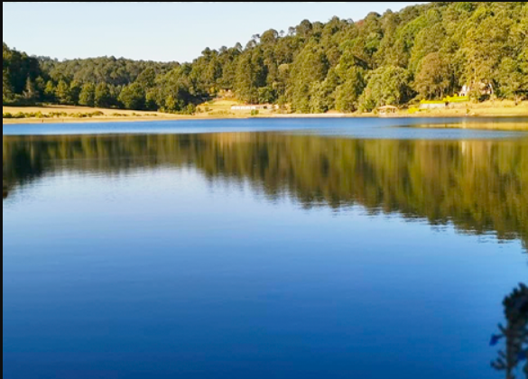

Este circuito rodea la pequeña y serena Laguna Negra, ofreciendo un trayecto ideal para disfrutar de la sombra de un tupido bosque montañoso de pino y encino. La vereda bordea el cuerpo de agua y se adentra entre la vegetación baja, rodeada de helechos, musgos y líquenes. A lo largo del camino es muy común escuchar el canto del carpintero de bellota y divisar pequeñas ardillas grises entre las copas de los árboles, además de apreciar bonitos reflejos del follaje sobre la superficie del agua. El terreno consiste en senderos de tierra con hojarasca, raíces expuestas y tramos de piedra suelta con pendientes moderadas. En época de lluvias, la zona cercana a la orilla suele estar bastante húmeda y resbaladiza, por lo que se recomienda usar calzado cerrado con buen agarre y llevar agua. La entrada a la vereda es totalmente libre y gratuita.